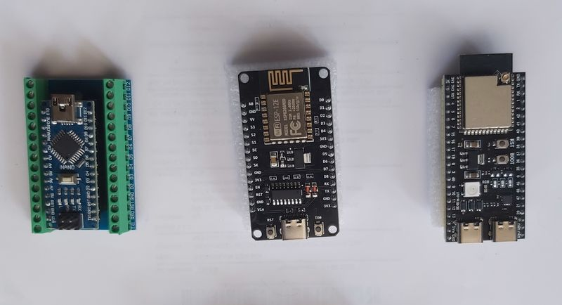
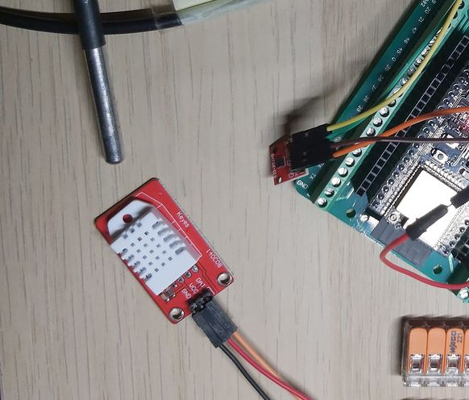
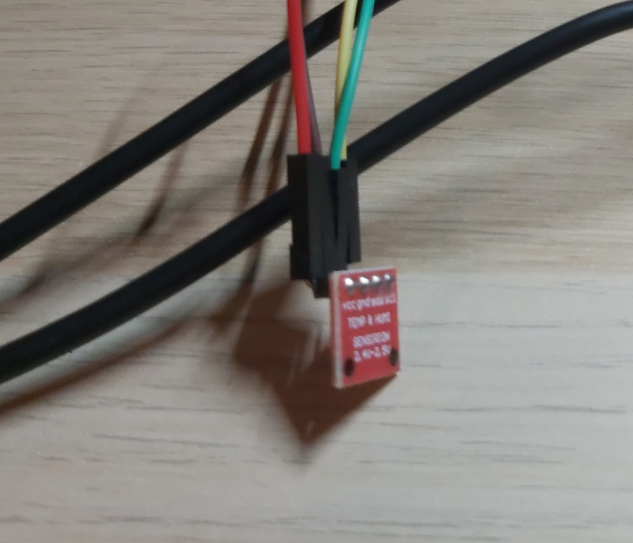
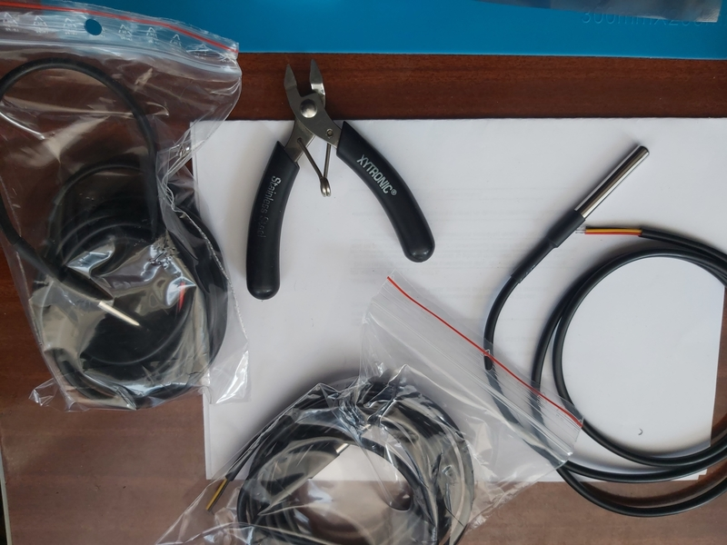
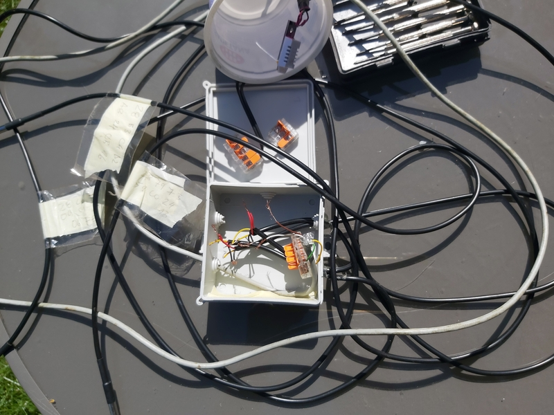

Akademia / Otwarta szuflada
Otwarta szuflada
Z szuflady wyciągamy ESP32, kilka czujników i trochę przewodów. Nie kupujemy niczego nowego.
Sprawdzamy, czy układ w ogóle działa, podłączamy czujniki jeden po drugim i zapisujemy, co pokazał monitor portu. Jeśli coś nie działa: opisujemy, dlaczego, i co pomogło.
Seria prowadzi do konkretnego zadania: pomiarów temperatury i wilgotności w domowej piwnicy, gdzie przechowujemy warzywa.
Odcinki
-
0. Co jest w szufladzie
Inwentarz: zdjęcie, lista, co to jest i czy w ogóle działa? Kabel USB z danymi, a nie tylko do ładowania.
Zasilanie: dwa zasilacze (5 V i 12 V), wspólna masa, dioda flyback przy pompce.

-
1. Mikrokontrolery: pierwsze uruchomienie
Arduino IDE, wybór płytki, wgranie programu. Co pokaże monitor portu. To samo dla ESP32, ESP8266 i Arduino — różnią się tylko szczegółami.
W przygotowaniu

-
2. DHT22 i SHT31 obok siebie
Dwa czujniki, te same warunki. Ile się różnią i któremu ufać?
W przygotowaniu

-
3. Jak daleko od ESP
Ile metrów przewodu zniesie każdy czujnik, zanim zacznie pokazywać NAN.
W przygotowaniu

-
4. DS18B20 na 1-Wire
Dwa czujniki na jednym przewodzie. Adresy, rezystor podciągający, który jest który.
W przygotowaniu

-
5. Do piwnicy
Sprawdzone elementy trafiają na miejsce. Dalszy ciąg w projekcie o piwnicy.
W przygotowaniu
